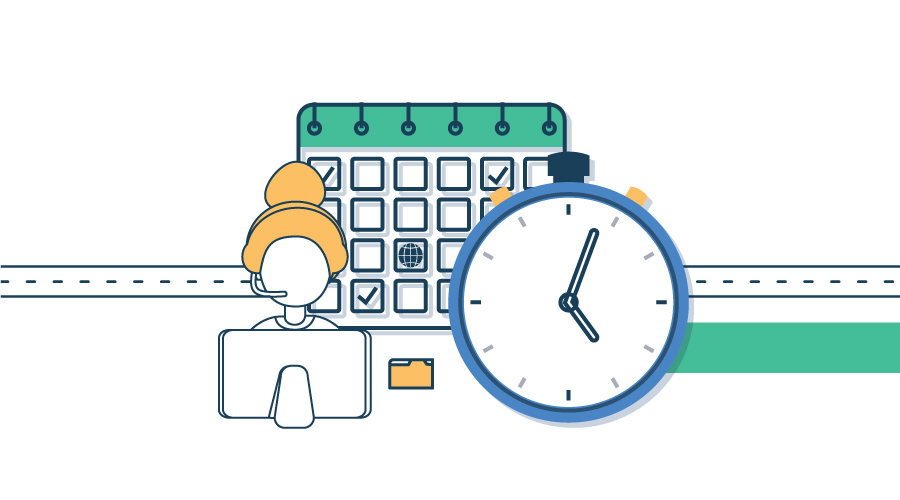

Información del turno agendado
- Token
- -
- Ciudadano
- -
- Trámite
- -
- Sede
- -
- Oficina
- -
- Funcionario asignado
- -
- Fecha
- -
- Hora
- -
Gobierno Digital
Información: Use el menú para cambiar de vista. No hay límite de tiempo para completar los formularios.
Atención ciudadana digital
Registre al ciudadano, reserve un horario y siga su turno con un token. Todo claro, ordenado y accesible.

Qué resuelve este sistema
Esta página ayuda a registrar al ciudadano, reservar un horario disponible y consultar el seguimiento del turno con un token. El sistema muestra la sede, oficina, funcionario asignado, fecha y hora para que la atención sea más clara y ordenada.
Cómo funciona
Ingrese los datos del ciudadano en el registro para habilitar la reserva.
Ir a registroElija trámite, sede, fecha y hora. Al confirmar se genera su token.
Ir a reservaConsulte el token para ver estado, oficina, funcionario, fecha y hora.
Ir a seguimientoCuando se incorpore el video se reproducirá con controles y sin inicio automático, e incluirá subtítulos sincronizados, transcripción textual y audiodescripción.
Para gestionar su turno: primero identifíquese en el registro con sus datos. Luego reserve el turno eligiendo trámite, sede, fecha y hora; al confirmar, el sistema genera un token con formato TUR-123456. Finalmente, consulte el seguimiento con ese token para ver el estado, la sede, la oficina, el funcionario asignado, la fecha y la hora.
Reserve su turno en minutos y consúltelo cuando quiera con su token.
Paso 1 de 3
Identifique al ciudadano para habilitar la reserva de turnos.
Paso 2 de 3
Complete los datos del trámite. Al confirmar se generará un token de seguimiento.
Paso 3 de 3
Ingrese el token generado en la reserva para consultar la información del turno.
Módulo accesible
Esta vista documenta cómo el formulario cubre alternativas textuales, multimedia, color, contraste, texto, tiempo, movimiento y orientación.
Seleccione un idioma para mostrar una alternativa textual equivalente de la ayuda del sistema.
Los iconos del menú, información, ayuda y marca institucional usan texto visible o `aria-label` para lectores de pantalla.
La ayuda multimedia futura tiene una transcripción textual equivalente. No se usa audio sin alternativa.
Si se agrega video grabado, esta arquitectura reserva el texto de subtítulos en esta vista de accesibilidad.
La descripción textual explica los pasos visuales: registro, reserva, token y seguimiento.
No hay transmisión en directo. Si se incorpora, se debe conectar una fuente de subtítulos en vivo.
La alternativa textual documenta el contenido visual equivalente para material grabado futuro.
Los errores no dependen solo del color: muestran texto explícito, borde, estado `aria-invalid` y región viva.
La paleta principal usa azul oscuro `#0A1F44` sobre blanco para asegurar contraste alto.
La interfaz usa unidades relativas y contenedores flexibles para soportar ampliación de texto.
No se usan imágenes para representar texto funcional. Todo el contenido relevante es HTML real.
Las vistas se reacomodan en una sola columna en pantallas pequeñas.
Bordes, controles, foco visible y estados usan contraste suficiente contra el fondo.
La lectura conserva line-height amplio y no fija alturas rígidas que rompan el espaciado.
Los tooltips se muestran al pasar el cursor y también cuando el botón recibe foco por teclado.
El diseño no fuerza orientación vertical u horizontal; responde a ambas.
No existe audio automático. Si se agrega audio, deberá incluir controles para pausar o detener.
No hay límite de tiempo para completar registro, reserva o seguimiento.
No hay carruseles ni contenido automático. Los diálogos se cierran manualmente.
No se usan animaciones con destellos ni parpadeos.
Alternativa textual al video de ayuda: registre o ingrese al ciudadano, reserve un turno, copie el token generado y consulte el seguimiento con los datos de oficina, funcionario, fecha y hora asignada.